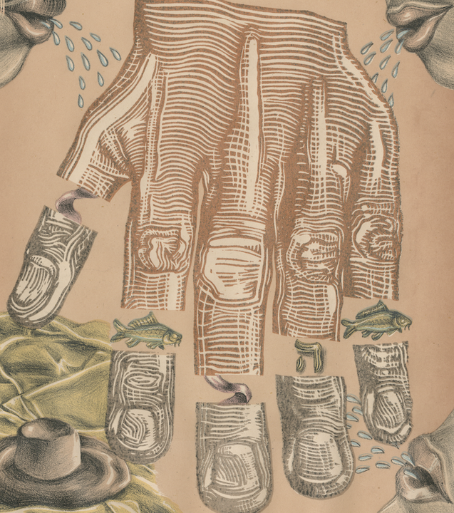

Lya Finston: A Lesser Light
When reality is filtered through belief, memory, or dread, does it become less true, or more human? A Lesser Light investigates worry, and the ways in which religion and perception construct themselves around it. Finston’s reflections on Jewish folk culture legitimize superstition, holding it sacred for the cultural legacy and promise of safety it provides. By marrying the authority of the printed image with eerie and dreamlike imagery, A Lesser Light examines the fragile architecture of belief, inviting viewers into a space of unknowing.